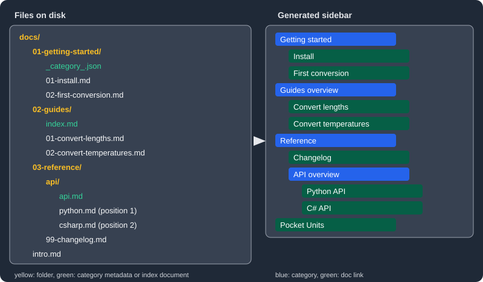

Sidebars
|
This content was generated with the assistance of AI and should be verified against the official documentation before being relied on in production. |
This page was written against Docusaurus 3.10.2 (the last release of the 3.x line) and checked on 2026-10-26. It explains how the sidebar of the docs plugin is defined, the six item types, how a folder of Markdown files becomes a sidebar automatically, and how to keep several sidebars on one site. The running example is the documentation site of Pocket Units, the small units-conversion library with a C# and a Python implementation. The files of that site were built with Docusaurus 3.10.2 and the menus shown below were read from the generated HTML.
What the sidebar is and why it exists
The sidebar is the tree of links shown on the left of every docs page. Docusaurus uses the same structure for three things:
-
grouping related documents into an ordered tree;
-
showing that tree on each document of the group;
-
generating the Previous and Next buttons at the bottom of each page.
A sidebar is configuration, not content: a document only appears in the tree when a sidebar item points at it, either because you wrote the item by hand or because a folder was turned into items automatically.
The sidebars file
The docs plugin reads a sidebars file whose path comes from the sidebarPath option. In a site created from the classic
preset the option is already set in docusaurus.config.ts, and the file is sidebars.ts:
import type {Config} from '@docusaurus/types';
import type * as Preset from '@docusaurus/preset-classic';
const config: Config = {
title: 'Pocket Units',
url: 'https://docs.example.com',
baseUrl: '/',
onBrokenLinks: 'throw',
presets: [
[
'classic',
{
docs: {
routeBasePath: '/',
sidebarPath: './sidebars.ts',
},
blog: false,
} satisfies Preset.Options,
],
],
};
export default config;Source: Docusaurus docs: Sidebar
The same option exists on the standalone plugin, @docusaurus/plugin-content-docs. Its value can be a path, false or
nothing at all:
| Value of sidebarPath | Effect |
|---|---|
a path |
The file is loaded and its exports define the sidebars. |
|
Sidebars are disabled. |
not set |
A single, fully autogenerated sidebar is created from the docs folder. |
The file exports an object. Each key is a sidebar id and each value describes one sidebar. With TypeScript the type comes from the plugin:
import type {SidebarsConfig} from '@docusaurus/plugin-content-docs';
const sidebars: SidebarsConfig = {
guideSidebar: ['intro', 'getting-started/install'],
};
export default sidebars;Source: Docusaurus docs: Sidebar
The file is executed by Node.js while the site is built. It cannot use browser APIs, React or JSX, so everything in it is plain data (or, for a custom generator, plain functions).
The Pocket Units docs folder
All the examples on this page use the following folder. Notice the number prefixes on files and folders, the
category metadata file, the index document of the guides folder and the document named like its folder in reference/api:
docs/
intro.md
01-getting-started/
_category_.json
01-install.md
02-first-conversion.md
02-guides/
index.md
01-convert-lengths.md
02-convert-temperatures.md
03-reference/
99-changelog.md
api/
api.md
python.md
csharp.mdEach file is a few lines of Markdown; for example docs/01-getting-started/02-first-conversion.md sets a label:
---
sidebar_label: First conversion
---
# Convert your first value
Convert 5 miles to kilometres.Document ids
Hand-written items refer to documents by id. By default the id is the path of the file below the docs folder, without the extension, and with number prefixes removed from every path segment. In the Pocket Units folder:
| File | Document id |
|---|---|
|
|
|
|
|
|
|
|
The ids can be overridden with the id front matter field. A sidebar that mentions an id that does not exist stops the
build. Writing the file path with its prefix, 02-guides/index, produced this output:
[ERROR] Loading of version failed for version current
[cause]: Error: Invalid sidebar file at "sidebars.ts".
These sidebar document ids do not exist:
- 02-guides/index
Available document ids are:
- getting-started/first-conversion
- getting-started/install
- guides/convert-lengths
- guides/convert-temperatures
- guides/index
- intro
- reference/api/api
- reference/api/csharp
- reference/api/python
- reference/changelogThe list of available ids at the end is the quickest way to find the right spelling. One exception to the rule above:
the dirName of an autogenerated item is a folder path, not an id, and it keeps the prefixes (01-getting-started).
Item types
A sidebar is an array of items. Docusaurus supports six types, plus two shorthands.
| Type | Purpose |
|---|---|
|
Links to a document and assigns that document to the sidebar. |
|
Links to any internal or external page that is not a doc. |
|
A dropdown of other items, optionally with its own page. |
|
Replaced by items generated from a folder. |
|
Renders raw HTML inside the list item. |
|
Links to a doc without taking part in navigation or pagination. |
doc
A doc item has an id and optional label, key, className and customProps. The shorthand is just the id as a
string. The label of a doc item is taken from the document: the sidebar_label front matter, then the title. The
sidebar_label front matter wins over the label written in the sidebar item, so a shorthand item loses nothing
compared with the long form.
import type {SidebarsConfig} from '@docusaurus/plugin-content-docs';
const sidebars: SidebarsConfig = {
docSample: [
{type: 'doc', id: 'intro', label: 'Pocket Units'},
'getting-started/install',
],
};
export default sidebars;Source: Docusaurus docs: Sidebar items
A doc item creates an implicit association: when a reader opens that document, this sidebar is displayed. Do not put
the same doc in two sidebars as a doc item; use ref for the second one (see ref and
Several sidebars on one site).
link
A link item has a label, an href and optional description, key, className and customProps. The href can
be an external URL or an internal path such as /:
import type {SidebarsConfig} from '@docusaurus/plugin-content-docs';
const sidebars: SidebarsConfig = {
linkSample: [
{
type: 'link',
label: 'Source on GitHub',
href: 'https://github.com/example/pocket-units',
},
{type: 'link', label: 'Home', href: '/'},
],
};
export default sidebars;Source: Docusaurus docs: Sidebar items
In the generated menu an external link receives an external-link icon. A link item does not associate any document
with the sidebar and does not take part in pagination.
html
An html item has a value string that is rendered inside the <li> of the item. The optional defaultStyle flag
applies the standard menu item styling. It is the way to insert dividers, section titles or small images. For a plain
title it is enough to give the text as the value and style it with className:
import type {SidebarsConfig} from '@docusaurus/plugin-content-docs';
const sidebars: SidebarsConfig = {
htmlSample: [
{type: 'html', value: 'Learn', className: 'sidebar-title'},
'intro',
],
};
export default sidebars;.sidebar-title {
font-size: 0.75rem;
font-weight: 700;
text-transform: uppercase;
padding: 0.5rem var(--ifm-menu-link-padding-horizontal);
}Source: Docusaurus docs: Sidebar items
The generated markup of the item above is a bare list item with the class:
<li class="theme-doc-sidebar-item-link theme-doc-sidebar-item-link-level-1 sidebar-title">Learn</li>The value is inserted as HTML, so only put trusted content in it.
category
A category item has a label and an items array, and the options below:
| Field | Meaning |
|---|---|
|
Whether the category can be collapsed. Defaults to the site-wide |
|
Whether it starts collapsed. Defaults to the site-wide |
|
Makes the label clickable: a generated index page or an existing doc (see below). |
|
Optional metadata. |
import type {SidebarsConfig} from '@docusaurus/plugin-content-docs';
const sidebars: SidebarsConfig = {
categorySample: [
{
type: 'category',
label: 'Getting started',
collapsible: true,
collapsed: false,
items: [
'getting-started/install',
'getting-started/first-conversion',
],
},
],
};
export default sidebars;Source: Docusaurus docs: Sidebar items
When the category needs no customisation there is a shorthand: an object whose key is the label and whose value is the array of items. The two sidebars below are equivalent:
import type {SidebarsConfig} from '@docusaurus/plugin-content-docs';
const sidebars: SidebarsConfig = {
longForm: [
{
type: 'category',
label: 'Getting started',
items: ['getting-started/install', 'getting-started/first-conversion'],
},
],
shorthand: {
'Getting started': ['getting-started/install', 'getting-started/first-conversion'],
},
};
export default sidebars;Source: Docusaurus docs: Sidebar items
Category links
By default the label of a category only expands and collapses it. The link field gives the category a page of its
own. Two kinds exist.
A generated index is a page that Docusaurus creates and that lists the direct children of the category as cards. It has
a title, description, slug, keywords and image; the slug defaults to a route under /category/. The Pocket
Units sidebar uses it for the getting-started category, with an explicit slug:
import type {SidebarsConfig} from '@docusaurus/plugin-content-docs';
const sidebars: SidebarsConfig = {
generatedIndexSample: [
{
type: 'category',
label: 'Getting started',
link: {
type: 'generated-index',
title: 'Getting started with Pocket Units',
slug: '/category/getting-started',
},
items: ['getting-started/install', 'getting-started/first-conversion'],
},
],
};
export default sidebars;Source: Docusaurus docs: Sidebar items
A doc link points the category at an existing document, which becomes the page of the category:
import type {SidebarsConfig} from '@docusaurus/plugin-content-docs';
const sidebars: SidebarsConfig = {
docLinkSample: [
{
type: 'category',
label: 'Guides',
link: {type: 'doc', id: 'guides/index'},
items: ['guides/convert-lengths', 'guides/convert-temperatures'],
},
],
};
export default sidebars;Source: Docusaurus docs: Sidebar items
A normal doc can also show the same card list. The DocCardList component renders all the sidebar items of the
parent category of the current document, which is useful in an index document:
---
sidebar_label: Guides overview
---
import DocCardList from '@theme/DocCardList';
# Guides
Task-oriented guides for the most common conversions.
<DocCardList />Source: Docusaurus docs: Sidebar items
The DocCardList example is taken from the documentation and was not built here; the plain index.md version of the
file was.
autogenerated
An autogenerated item has a single field, dirName, the folder to read relative to the docs folder (. is the docs
folder itself). It is replaced by a list of doc and category items, called a sidebar slice. The folder itself does
not become a category: only what it contains does. The next section describes the generation rules.
ref
A ref item has an id and behaves exactly like a doc item except that it takes no part in navigation. It is ignored
when the sidebar of a document is chosen and when Previous and Next links are computed. It is the right item for
linking one document from several sidebars. The Pocket Units guide sidebar links the changelog, which belongs to the
reference sidebar:
import type {SidebarsConfig} from '@docusaurus/plugin-content-docs';
const sidebars: SidebarsConfig = {
guideSidebar: [
'intro',
{type: 'ref', id: 'reference/changelog'},
],
referenceSidebar: [
{type: 'autogenerated', dirName: '03-reference'},
],
};
export default sidebars;In the built site the guide menu contains a Changelog entry, but opening the changelog page shows the reference sidebar, not the guide sidebar.
Autogenerated sidebars
Docusaurus can build a sidebar from the file system: every folder produces a category and every file produces a doc item. Items are sorted alphabetically by file and folder name unless a position says otherwise. A complete autogenerated sidebar needs one line:
import type {SidebarsConfig} from '@docusaurus/plugin-content-docs';
const sidebars: SidebarsConfig = {
docsSidebar: [{type: 'autogenerated', dirName: '.'}],
};
export default sidebars;Built against the Pocket Units folder, this produced the following menu (read from the generated HTML; categories other than the active one are collapsed in the page, so their children are not listed here):
category: Getting started (/category/getting-started)
link: Install (/getting-started/install)
link: First conversion (/getting-started/first-conversion)
category: Guides overview (/guides/)
category: Reference (/reference/changelog)
link: Changelog (/reference/changelog)
category: API overview (/reference/api/)
link: Python API (/reference/api/python)
link: C# API (/reference/api/csharp)
link: Pocket Units (/)
The figure maps the files to that result. Several rules are visible in it, and the sections below explain each one.
Slices and mixing with hand-written items
An autogenerated item can sit anywhere inside a sidebar or inside a category, next to hand-written items. Several of them can read different folders, so one sidebar can interleave hand-written and generated parts:
import type {SidebarsConfig} from '@docusaurus/plugin-content-docs';
const sidebars: SidebarsConfig = {
mixed: [
'intro',
{
type: 'category',
label: 'Getting started',
items: [{type: 'autogenerated', dirName: '01-getting-started'}],
},
{type: 'autogenerated', dirName: '03-reference'},
],
};
export default sidebars;Because the dirName folder does not become a category, a category is how you give a generated slice a label.
Category index convention
A category can be linked automatically to an index document. A document is the category index of its folder when its file name, compared without case, is one of:
-
index, for exampledocs/Guides/index.md; -
README, for exampledocs/Guides/README.mdx; -
the name of the parent folder, for example
docs/Guides/Guides.md.
This is equivalent to a category with a doc link to that document. In the Pocket Units folder, 02-guides/index.md links
the Guides category and 03-reference/api/api.md links the API category. When a category is linked to a document, its
label, class name, key, position and custom props default to those of the document, not of the folder. That is why the
categories read Guides overview (the sidebar_label of index.md) and API overview (the title of api.md) in the menu
above instead of the folder names.
A folder that holds only an index document becomes a plain link instead of a category, which allows a document to keep its images next to it.
The convention can be changed. The default matcher compares the file name with index, readme and the name of the
folder. Supplying isCategoryIndex through a custom sidebarItemsGenerator replaces it: for example to accept intro
as well, or to return false and disable the convention. The matcher receives the fileName (without extension and with
the original case), the list of directories from the lowest to the highest level, and the extension with its dot.
Category metadata files
A folder cannot carry a label or a position by itself, so a _category_.json or _category_.yml file in the folder
holds the category metadata. The fields are label, position, key, collapsible, collapsed, className, link
and customProps. The Pocket Units getting-started folder uses:
{
"label": "Getting started",
"collapsed": false,
"link": {
"type": "generated-index",
"title": "Getting started with Pocket Units",
"description": "Install the library and run your first conversion.",
"slug": "/category/getting-started"
}
}The YAML form carries the same fields. The position may be a fractional number, so a category can be placed between two numbered neighbours:
label: API
position: 2.5
collapsible: true
collapsed: false
className: api-category
link:
type: generated-index
title: API overview
customProps:
description: Shown by a swizzled DocCardThis YAML file is the documented form and was not built as part of the Pocket Units folder.
Three rules govern the link field in this file:
-
If it is set explicitly, Docusaurus applies no default convention, so the index document is not picked up.
-
A doc link can be relative: in the folder
guides, the idintrois resolved toguides/introfirst and only falls back tointrowhen that does not exist. -
link: nullopts out of both the convention and any generated page.
The position in this file is only used inside the slice: Docusaurus does not reorder the other items of the sidebar.
Metadata of a document
For documents, the equivalent metadata is written in the front matter:
| Front matter | Effect in an autogenerated sidebar |
|---|---|
|
Text in the sidebar. Defaults to the title. |
|
Position inside the slice. Default is alphabetical order. |
|
Extra class on the item. |
|
Unique key of the item, mostly needed in translated sites. |
|
Arbitrary object available to client code. |
|
Label in Previous and Next buttons; defaults to the sidebar label or title. |
For example, the python page comes before the C# page because of these two front matter blocks:
---
sidebar_position: 1
---
# Python API
Convert with the pocket_units module.---
sidebar_position: 2
---
# C# API
Convert with the Converter class.Items without a position were placed after items with one. In the menu above, intro has no position and comes last,
and the changelog (position 99 from its prefix) comes before the unpositioned API category. If you position some items,
position all the siblings, or give the others a position too.
Number prefixes
Positioning every file by hand is tedious. The alternative is to prefix files and folders with numbers, which also keeps the file explorer in the same order as the sidebar:
docs/
01-Intro.md
02-Tutorial Easy/
01-First Part.md
02-Second Part.md
03-Tutorial Advanced/
01-First Part.md
02-Second Part.mdBy default Docusaurus removes the prefix from the document id, the title, the label and the URL, and uses the number as
the position. This is what the Pocket Units folder shows: 01-getting-started/01-install.md has the id
getting-started/install and the URL /getting-started/install.
Docusaurus supports several prefix patterns. The behaviour is controlled by:
-
the
numberPrefixParserplugin option:truefor the default parser,falseto leave all names untouched, or a function that takes the file name and returns the prefix and the cleaned name; -
the
parse_number_prefixesfront matter field, which disables the parsing for one document.
The documentation advises preferring metadata over prefixes, because renumbering a file changes its path, and Markdown links that point to the file by path must be updated with it:
- Check the [Tutorial End](../04-End.mdx);
+ Check the [Tutorial End](../05-End.mdx);A complete hand-written sidebars file
The Pocket Units site uses two sidebars. The guide sidebar mixes every item type; the reference sidebar is generated.
The navbar entries select which sidebar a link opens (sidebarId):
import type {SidebarsConfig} from '@docusaurus/plugin-content-docs';
const sidebars: SidebarsConfig = {
guideSidebar: [
'intro',
{type: 'html', value: 'Learn', className: 'sidebar-title'},
{
type: 'category',
label: 'Getting started',
collapsed: false,
link: {
type: 'generated-index',
title: 'Getting started with Pocket Units',
slug: '/category/getting-started',
},
items: [{type: 'autogenerated', dirName: '01-getting-started'}],
},
{
type: 'category',
label: 'Guides',
link: {type: 'doc', id: 'guides/index'},
items: ['guides/convert-lengths', 'guides/convert-temperatures'],
},
{type: 'ref', id: 'reference/changelog'},
{
type: 'link',
label: 'Source on GitHub',
href: 'https://github.com/example/pocket-units',
},
],
referenceSidebar: [
{type: 'autogenerated', dirName: '03-reference'},
],
};
export default sidebars;navbar: {
title: 'Pocket Units',
items: [
{type: 'docSidebar', sidebarId: 'guideSidebar', position: 'left', label: 'Guide'},
{type: 'docSidebar', sidebarId: 'referenceSidebar', position: 'left', label: 'Reference'},
],
},Source: Docusaurus docs: Sidebar items
The file passes tsc --noEmit and the site builds. The guide menu read from the built page is:
link: Pocket Units (/)
link: Learn
category: Getting started (/category/getting-started)
link: Install (/getting-started/install)
link: First conversion (/getting-started/first-conversion)
category: Guides (/guides/)
link: Convert lengths (/guides/convert-lengths)
link: Convert temperatures (/guides/convert-temperatures)
link: Changelog (/reference/changelog)
link: Source on GitHub (https://github.com/example/pocket-units)The Learn entry is the html item (the reader sees a title, not a link). The getting-started category starts open because
of collapsed: false; the Guides category starts collapsed, which is the default. The page of the Guides category is the
index.md document. Its front matter sidebar_class_name: guide-new on the temperatures guide adds the class guide-new to that
menu item, also when the sidebar is written by hand, because the shorthand takes its metadata from the document.
Several sidebars on one site
A site can have as many sidebars as it has keys in the exported object. Each document that appears as a doc item (or
inside an autogenerated slice) in a sidebar shows that sidebar. If the same document is a doc item in two sidebars,
Docusaurus does not guarantee which one it will display. The tools to resolve this:
-
refitems, described above, link a document from a second sidebar without associating it. -
The
displayed_sidebarfront matter field forces the sidebar for a page, even if the sidebar does not contain the page (useful for a landing page). The valuenullhides the sidebar completely, and then there is no pagination either. -
If a page shows a sidebar that does not contain it, no Previous and Next links are generated.
---
displayed_sidebar: referenceSidebar
---
# ChangelogThis front matter example is from the documentation and was not built here.
Pagination
Previous and Next links come from the displayed sidebar, in order, strictly. The front matter fields pagination_next
and pagination_prev replace the neighbour with another document id, or remove the link with null. In the built Pocket
Units site the Install page links Previous to the getting-started index page and Next to First conversion, and the
temperatures guide links Previous to the lengths guide. The ref changelog entry is ignored when these links are
computed.
Site-wide sidebar options
Defaults can be set for every category at once.
| Option | Default | Meaning |
|---|---|---|
|
true |
Whether categories can be collapsed. |
|
true |
Whether categories start collapsed. |
|
false |
Shows a button at the bottom to hide the whole sidebar. |
|
false |
Collapses sibling categories when you navigate to another one. |
import type {Config} from '@docusaurus/types';
import type * as Preset from '@docusaurus/preset-classic';
const config: Config = {
title: 'Pocket Units',
url: 'https://docs.example.com',
baseUrl: '/',
presets: [
[
'classic',
{
docs: {
sidebarPath: './sidebars.ts',
sidebarCollapsible: true,
sidebarCollapsed: false,
},
blog: false,
} satisfies Preset.Options,
],
],
themeConfig: {
docs: {sidebar: {hideable: true, autoCollapseCategories: true}},
} satisfies Preset.ThemeConfig,
};
export default config;Source: Docusaurus docs: docs plugin API
The hideable option was part of the Pocket Units build; autoCollapseCategories was not exercised.
Customising the generator
When the file system conventions are not enough, the docs plugin accepts a sidebarItemsGenerator function. It receives
the autogenerated item, the version, all the docs, the number prefix parser, the category index matcher, the metadata
read from category files, and the default generator, and returns the list of items. The documented pattern is to call the
default generator and post-process its result:
import type {Config} from '@docusaurus/types';
import type {Options as DocsOptions} from '@docusaurus/plugin-content-docs';
type Item = {type: string; items?: Item[]};
function reverseSidebarItems(items: Item[]): Item[] {
const result = items.map((item) =>
item.type === 'category'
? {...item, items: reverseSidebarItems(item.items ?? [])}
: item,
);
return result.reverse();
}
const docsOptions: DocsOptions = {
sidebarPath: './sidebars.ts',
async sidebarItemsGenerator({defaultSidebarItemsGenerator, ...args}) {
const items = await defaultSidebarItemsGenerator(args);
return reverseSidebarItems(items as Item[]) as typeof items;
},
};
const config: Config = {
title: 'Pocket Units',
url: 'https://docs.example.com',
baseUrl: '/',
presets: [['classic', {docs: docsOptions, blog: false}]],
};
export default config;This example adapts the reversal recipe of the documentation and the typed version above was not built. The documentation points out that the default generator is a few hundred lines long, so reusing it is preferable to writing a generator from scratch.
Pitfalls
| Symptom | Cause and remedy |
|---|---|
Build stops with "These sidebar document ids do not exist" |
A hand-written item uses a path with number prefixes or a wrong id. Use the id from the list printed in the error. |
A document appears twice in a category |
A hand-written category links the index document with |
The same document shows different sidebars |
The document is a |
The category label shows a document title instead of the folder name |
The category is linked to an index document, and the metadata of the document wins. Set the label in the front matter
of that document ( |
|
The file sits in the folder named by |
Items in an unexpected order |
Some siblings have a position and others do not. Positioned items come first. Add positions everywhere or use prefixes. |
Links break after renumbering |
Number prefixes are part of the file path. Prefer the front matter |